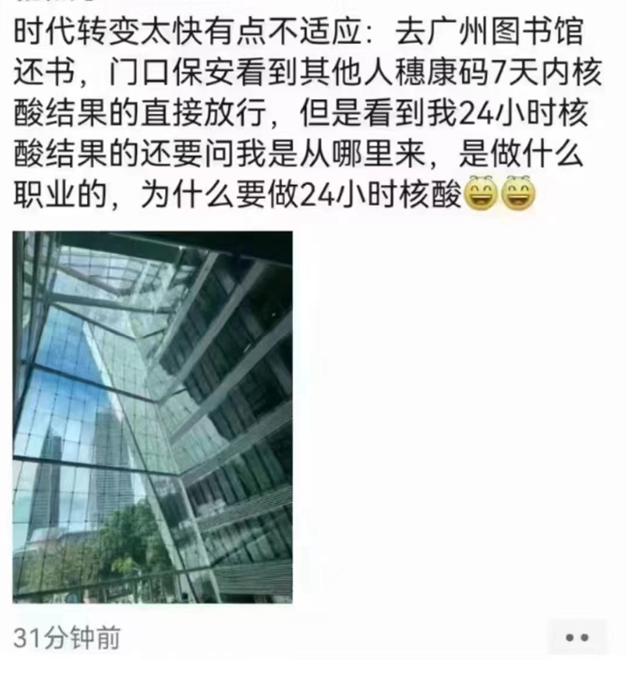
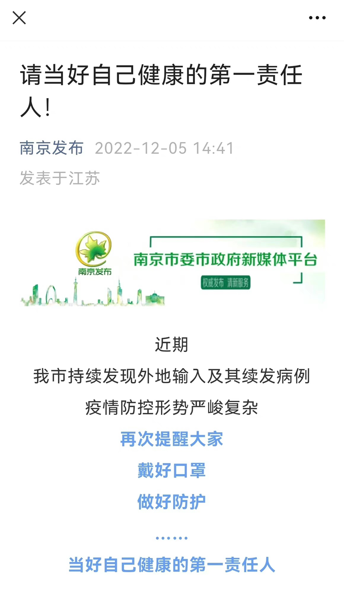
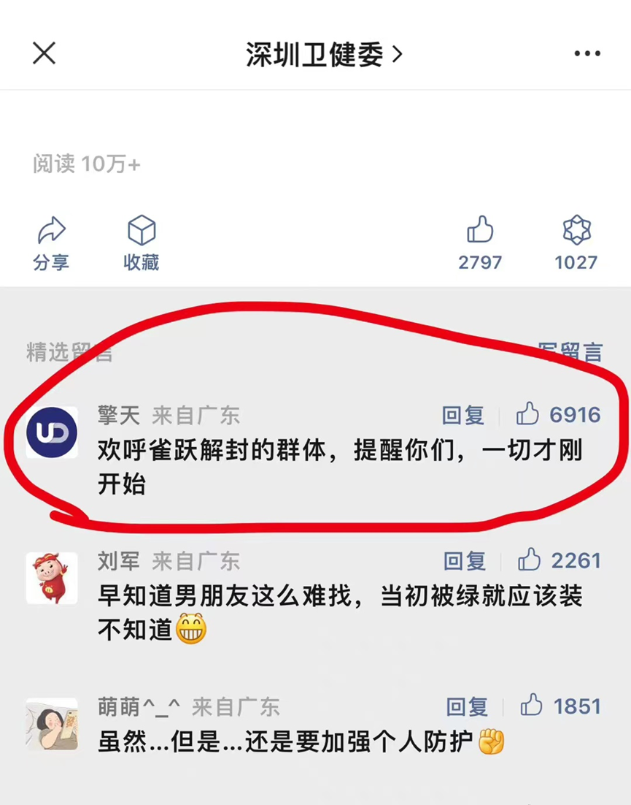
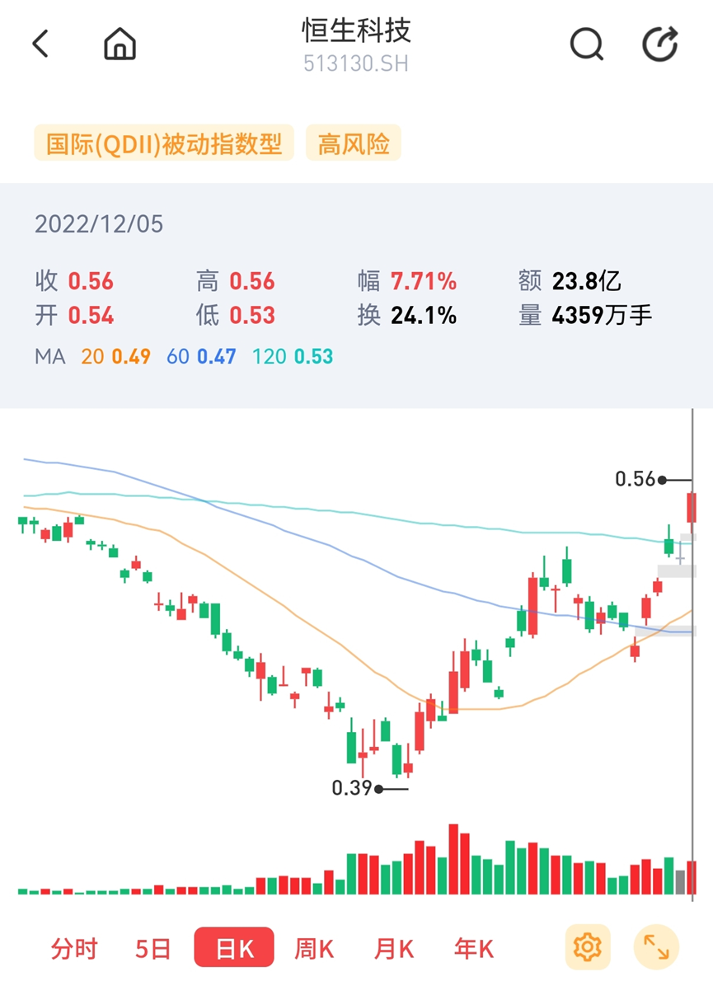
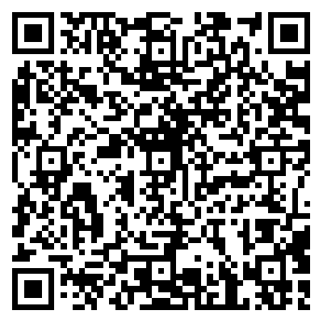

别吵了，起来赚钱
原创 V姐万事屋 V姐来了 2022-12-06 08:00 发表于上海
原文链接(长) 原文链接(短)
Hi， 我是V姐。
最近网上继续为放开的节奏吵成一团，有人欢呼雀跃，有人忧心忡忡。
各地陆续进一步放松，南京，上海，杭州三个长三角核心城市，这两天都接连放松核酸查验，进入非特殊场所不需要核酸。
【保定疫情】夜里冲上热搜，白天下架，市民说周围全阳了，官方说新增数是0。
核酸是非必要不测了，只要不测就是没有。

但是有没有你自己清楚，各地都反复告知自己是健康的第一责任人。

深圳卫健委的这个精选，高赞第一名，暗示得相当明显了：

开弓没有回头箭，高兴的朋友做好防护，担心的朋友抱怨也没用。
**毕竟后面再挣不到钱，也不能怪防疫了。**
所以还是要打起精神搞钱。
今天人民币兑美元升到6.96，汇率爆拉1000点。
A股的白马蓝筹和中字头股票大涨，中概互联大涨，恒生科技大涨。
资本市场开始炒起经济复苏的预期了，今天成交突破万亿。
最近的板块轮得比电风扇都快。
炒放开，机票酒店旅游涨。
20条落地，呼吸机墓地涨。
炒躺平， 抗原疫苗中药涨。
炒复苏，地产金融保险涨。
看情绪不看逻辑，因为情绪和中期逻辑经常是冲突的。
比如说炒放开，情绪上导致消费涨，但实际上根据外围数据，奥密克戎放开后，消费会先经历下挫，大约6个月之后才有可能转为增长。
中期逻辑上，高端制造、医药医疗、新能源、自主可控和军工都是好的，但是最近行情全面抛弃创业板，所以跌得一塌糊涂。
恒生科技最近1个月涨了60%，最新的价格已经偏离60日均线上方20%左右。

情绪上来还能再冲一波，这个就是港股的特点，暴涨暴跌毫无人性。
价格总要向价值回归的。最近的上证和创业板点位差已经达到800点，创最近2年的新高。极端牛市和熊市的情况下，这个差也就是1000-1200点，因此创业板在未来1个月大概率要反弹。
跟着情绪跑对普通人来说很难盈利，所以手上有筹码的这个点不要下车，没有筹码的，入些低位的板块等待行情。
就目前的经济情况来说，最坏的情况已经过去了。12月底的政治局会议和中央经济会议，继续释放稳健偏宽松的货币政策概率很大，明年股市赚钱的概率也会比较大。
如果想要入市的朋友，现在这个时间点是不错的。之前很多朋友想要找佣金免5的券商，老实说，确实少，99%都不免5了（也就是佣金起步费5元）。
这里帮大家找了一家免5的，扫码即可开户。

另外，这家券商支持网格交易，也就是设置好涨跌多少，就自动减仓加仓。
对于高频选手来说，他家还有个小T机器人，可以捕捉日内波动，帮助大家吃到超额收益。
如果你没有开户，或者不介意再开一个账户，可以试试看。
* * *
对大部分人来说，没钱确实比奥密克戎更可怕。
22年是异常艰难的一年，大环境如此的不确定，个体身在其中充满无力感。
这种无力很容易转化成愤怒，进而摧毁一个人沉下心做事的状态。
**说句残酷又真实的话，一个满腔愤怒的人，适合被利用，很难去合作。**
如果感觉到自己有这样的倾向，不如暂时抽离网络，回到现实里，给自己创造一个简单的小世界。
可以去琢磨美食，可以去运动，可以去看书，也可以泡一杯茶，发发呆。
人生无非两种选择，要么忙着生，要么忙着死。
平淡混沌里，能够找到自在，回忆起小时候留蚊于帐中做青云白鹤观，也就不算忙着死了。
保护好生活的乐趣，才是搞钱的意义。